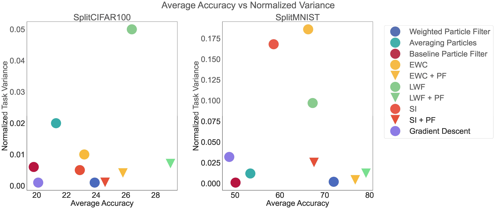
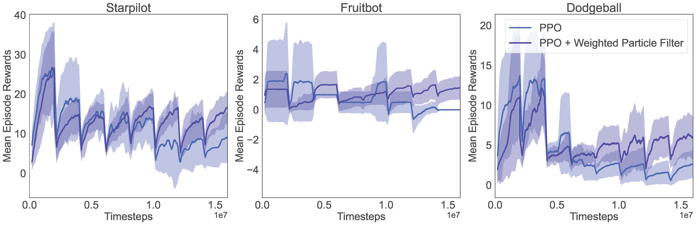

Permutation Invariant Learning
with High-Dimensional Particle Filters
|
1Massachusetts Institute of Technology
|
2Harvard College
|
🔺Indicates equal contribution
Abstract: What is the optimal order of training data?
Sequential learning in deep models often suffers from challenges such as catastrophic forgetting and loss of plasticity, largely due to the permutation dependence of gradient-based algorithms, where the order of training data impacts the learning outcome. In this work, we introduce a novel permutation-invariant learning framework based on high-dimensional particle filters. We theoretically demonstrate that particle filters are invariant to the sequential ordering of training minibatches or tasks, offering a principled solution to mitigate catastrophic forgetting and loss-of-plasticity. We develop an efficient particle filter for optimizing high-dimensional models, combining the strengths of Bayesian methods with gradient-based optimization. Through extensive experiments on continual supervised and reinforcement learning benchmarks, including SplitMNIST, SplitCIFAR100, and ProcGen, we empirically show that our method consistently improves performance, while reducing variance compared to standard baselines.
Why do we want Permutation Invariance?
We argue that both Catastrophic Forgetting and Loss of Plasticity are due to a weak permutaiton of training data. Unlike conventional training, where minibatch data is randomized,
Loss of plasticity arises from adapting to strictly ordered tasks.

Catastrophic forgetting arises from learning strictly ordered tasks.

We propose to view these learning problems through the lens of permutation invariance. By developing learning algorithms that are invariant to the order of data presentation, we can mitigate catastrophic forgetting and loss of plasticity. Our key insight is the use of particle filters, a probabilistic tool widely used in state estimation, to achieve this goal.
We derive a high dimensional particle filter weighting rule based on Bayesian Model Averageing that is Permutation Invariant.
\[
\displaystyle w_{t+1}^{(i)} = w_t^{(i)} e^{-\frac{L_{t+1}(x_{t+1}^{(i)}) + L_{t+1}(x^{(i)}_t)}{2}}
\]
Our Particle Filter both avoids Catastrophic Forgetting and Loss of Plasticity

